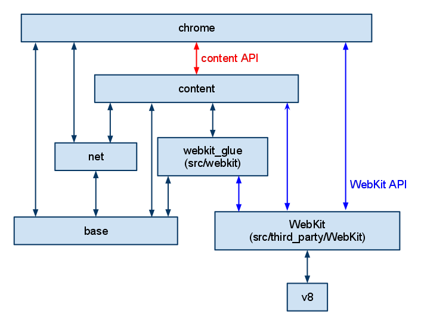

Chromium
Table of Contents
1. High-level overview
Two main parts:
- Browser: Main process and represents all the UI and I/O.
- Renderer (include Blink and Web engine): Is the (often) per-tab sub-process that is driven by the browser. It embeds Blink to do layout and rendering.
More details in Chromium-Multi-Process-Arch.

1.1. Notes:
- WebKit has changed to Blink.
2. Web Page Display
2.0.1. How Pages fetched from network
3. Renderer
3.1. How renderer boot
contentmainrunnerimpl.cc :: kMainFunctions rendermain.cc :: RendererMain
3.2. How codes about views to organized
Page -> RenderViewHost == blink::WebView
4. How Chromium startup
4.1. Steps
4.1.1. Platform specific
4.1.2. Common Initliazation
- Commandline initialize: Process able to get it’s process type from base::CommandLine once it’s initialized. After that system may append some extra arguments to commandline. Also commandline setup for headless mode.
- Load Mojo DLL if MojoCore DLL provided.
4.2. Browser-Process Stages
see content/public/browser/browsermainparts.h.
4.3. CallGraph
main (chrome/app/chrome_exe_main_aura.cc)
==> ChromeMain (chrome/app/chrome_main.cc)
==> content::ContentMain (content/app/content_main.cc)
==> content::RunContentProcess (content/app/content_main.cc)
==> content::ContentMainRunnderImpl::Run (content/app/content_main_runner_impl.cc)
==> content::RunBrowser (content/app/content_main_runner_impl.cc)
==> content::RunBrowserProcessMain (...)
==> BrowserMain (content/browser/browser_main.cc)
main (chrome/app/chrome_exe_main_aura.cc)
==> ChromeMain (chrome/app/chrome_main.cc)
==> content::ContentMain (content/app/content_main.cc)
==> content::RunContentProcess (content/app/content_main.cc)
==> content::ContentMainRunnderImpl::Run (content/app/content_main_runner_impl.cc)
==> content::RunOtherNamedProcessTypeMain (content/app/content_main_runner_impl.cc)
==> RendererMain (content/Renderer/renderer_main.cc)
5. How Chromium Drive ?
5.1. Concepts
- MessagePump: Work like an engine to handle Tasks from another threads.
- SequenceManager: Manages TaskQueues multiplexing all posted tasks into a single backing sequence.
- TaskQueue: Not works as an interface for TaskQeueueImpl, by comments of this class.
- ThreadController: Used by SequenceManager to schedule actual work to be run.
- RunLoop: Helping to running a concrete event looping implementation.
- TaskExecutor
- BrowserTaskExecutor (On Browser-Type-Process)
- TaskRunner, The final version of TaskRunner to run Task from TaskQueue in a SequenceManager is defined TaskQueueImpl::TaskRunner
6. Mojo and Services
6.1. Terminology
- Endpoints: Entity that able to send messages and receive messages between entities of Endpoint set.
- Message pipe: Entity with type (Endpoint, Endpoint), a message pipe is bidirectional.
6.2. Introduction
IPC in chromium is done by Mojo. So Renderer could be reuqest some information or some control from Browser or another Named-Process.
To define a type of request and correspond reply by Mojo, you need a mojom file to describe interface. Given a mojom interfaces and a message pipe, one of the endpoints can be designated as a Remote, and is used to send messages described by the interface. The other endpoint can be designated as a Receiver and is used to receive itnerface messages. In another word, if you want to do IPC in Chromium you have to define interface on a message pipe.